Pinot CountryPeople (14)
Growers, winemakers, nurserymen, scientists, the writers who argued about it.
Butchers (1)
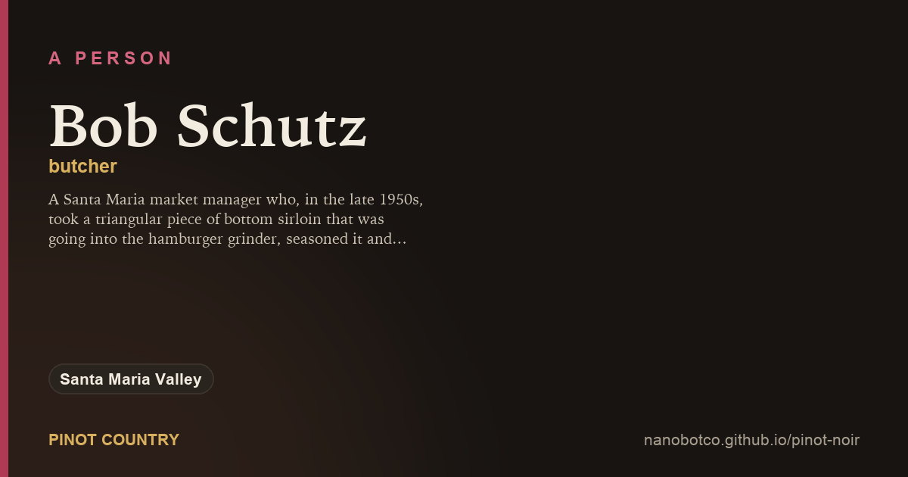
Bob SchutzA Santa Maria market manager who, in the late 1950s, took a triangular piece of bottom sirloin that was going into the hamburger grinder, seasoned it and put it on a rotisserie.
Growers (2)
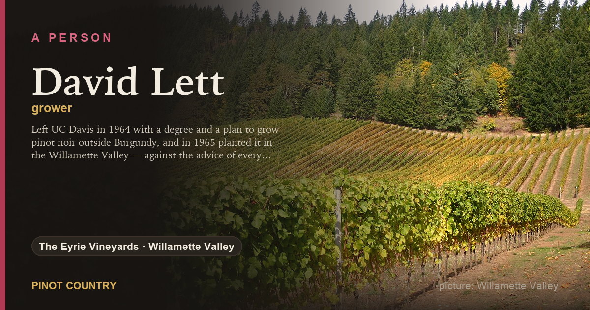
David LettLeft UC Davis in 1964 with a degree and a plan to grow pinot noir outside Burgundy, and in 1965 planted it in the Willamette Valley — against the advice of every professor he had.
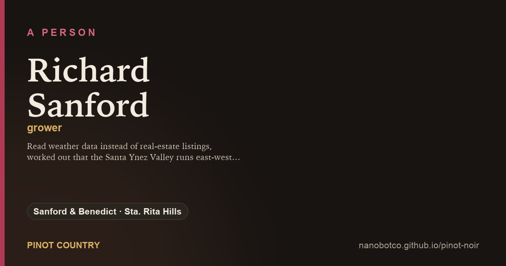
Richard SanfordRead weather data instead of real-estate listings, worked out that the Santa Ynez Valley runs east-west and lets the ocean in, and planted pinot noir at Sanford & Benedict in 1971.
Owners (5)
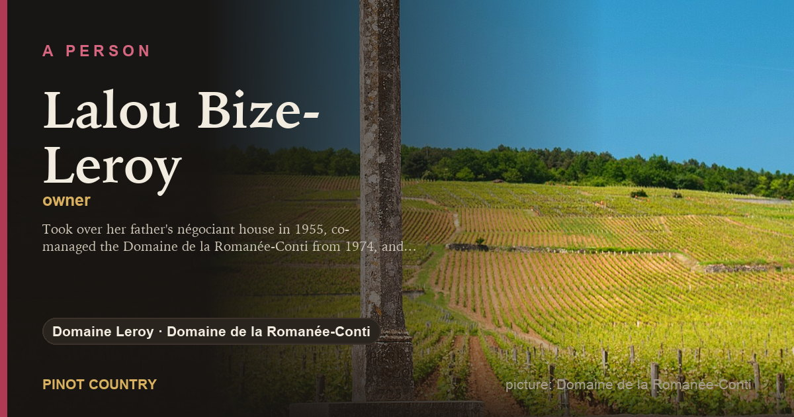
Lalou Bize-LeroyTook over her father's négociant house in 1955, co-managed the Domaine de la Romanée-Conti from 1974, and built Domaine Leroy and Domaine d'Auvenay into biodynamic estates with famously small crops.
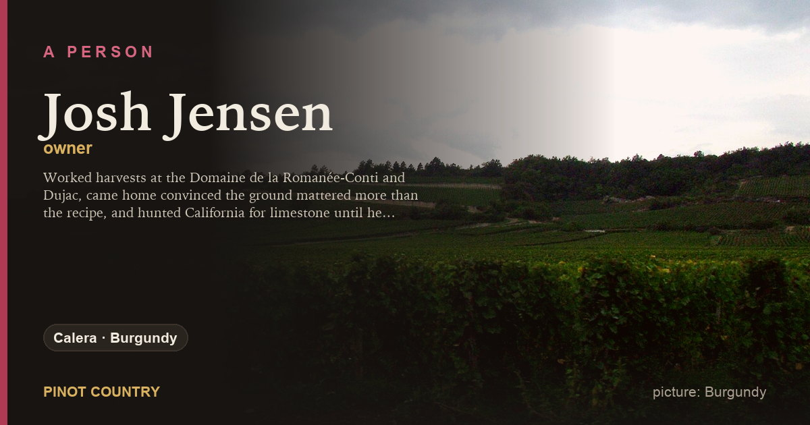
Josh JensenWorked harvests at the Domaine de la Romanée-Conti and Dujac, came home convinced the ground mattered more than the recipe, and hunted California for limestone until he found an old lime kiln on Mount Harlan.
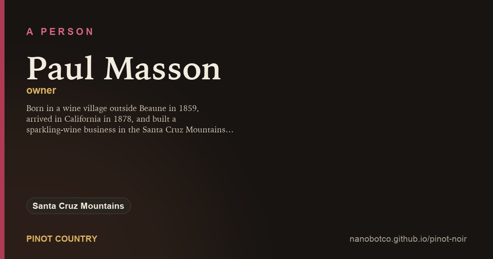
Paul MassonBorn in a wine village outside Beaune in 1859, arrived in California in 1878, and built a sparkling-wine business in the Santa Cruz Mountains on vines he brought from Burgundy.
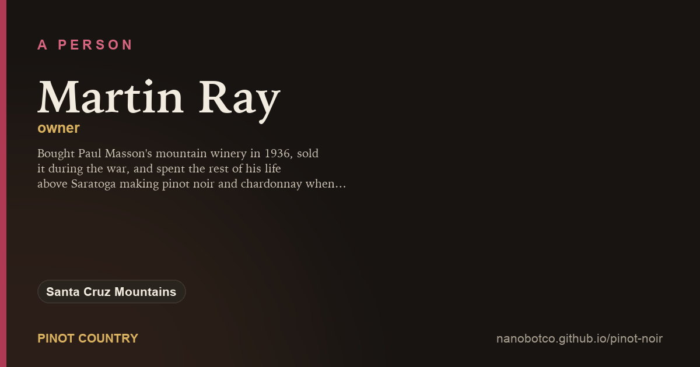
Martin RayBought Paul Masson's mountain winery in 1936, sold it during the war, and spent the rest of his life above Saratoga making pinot noir and chardonnay when California was planting neither.
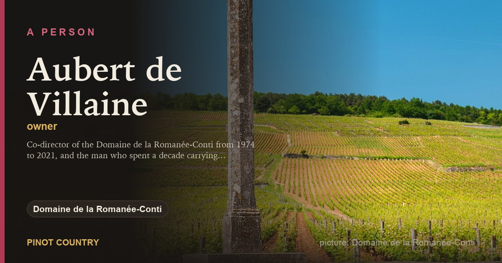
Aubert de VillaineCo-director of the Domaine de la Romanée-Conti from 1974 to 2021, and the man who spent a decade carrying Burgundy's climats to UNESCO.
Scientists (1)
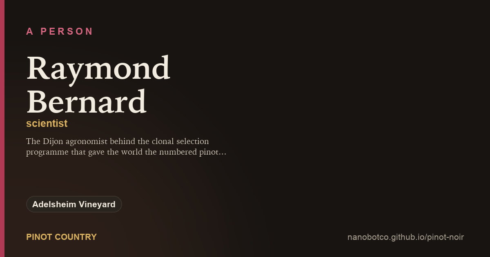
Raymond BernardThe Dijon agronomist behind the clonal selection programme that gave the world the numbered pinot noirs — 113, 114, 115, 667, 777 and the rest.
Winemakers (5)
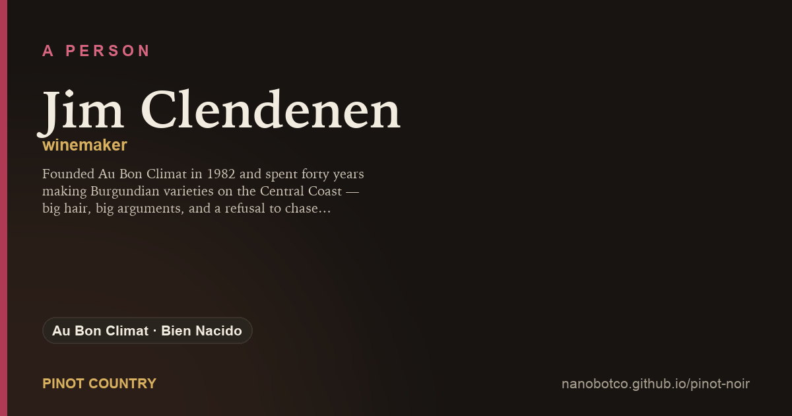
Jim ClendenenFounded Au Bon Climat in 1982 and spent forty years making Burgundian varieties on the Central Coast — big hair, big arguments, and a refusal to chase ripeness when everyone else did.
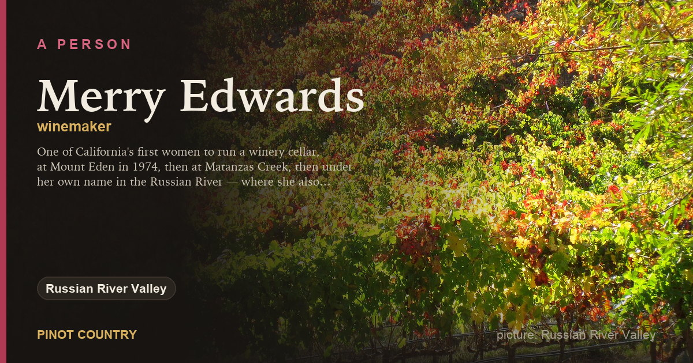
Merry EdwardsOne of California's first women to run a winery cellar, at Mount Eden in 1974, then at Matanzas Creek, then under her own name in the Russian River — where she also selected a pinot noir now propagated as her own.
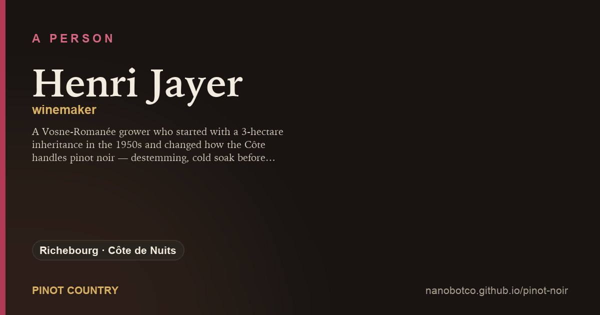
Henri JayerA Vosne-Romanée grower who started with a 3-hectare inheritance in the 1950s and changed how the Côte handles pinot noir — destemming, cold soak before fermentation, no filtration, clean fruit above all.
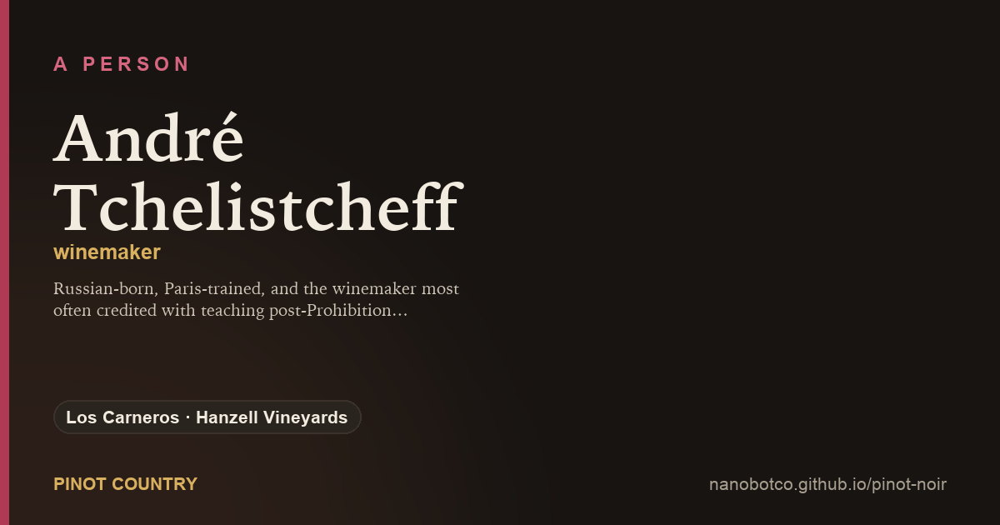
André TchelistcheffRussian-born, Paris-trained, and the winemaker most often credited with teaching post-Prohibition California what a cellar is for. He is remembered for cabernet, and he also argued for cold ground — Carneros among it.
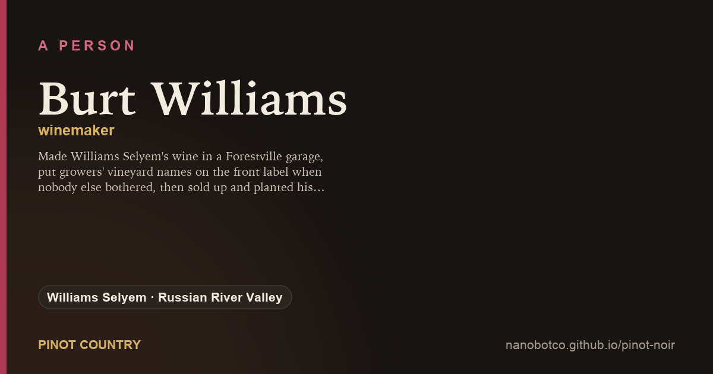
Burt WilliamsMade Williams Selyem's wine in a Forestville garage, put growers' vineyard names on the front label when nobody else bothered, then sold up and planted his own vines in Anderson Valley.